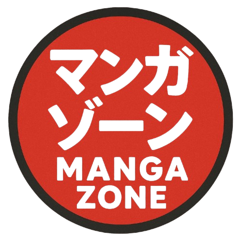

Dans Hunter x Hunter, le groupe formé par Gon, Killua, Kurapika et Leorio n’a pas de nom officiel donné dans la série. Ils sont simplement connus comme les quatre amis ou le groupe d'amis de Gon, et sont souvent désignés collectivement par leurs noms. Bien qu'ils forment une équipe centrale tout au long de plusieurs arcs, l'œuvre ne leur attribue pas de nom de groupe particulier.
Gon Freecss est le protagoniste du manga Hunter x Hunter. C'est un jeune garçon de 12 ans, naïf mais déterminé, qui devient Hunter pour retrouver son père.
Killua Zoldyck est le meilleur ami de Gon. Issu d’une famille d’assassins, il maîtrise le Nen de type Transmutation, qu’il utilise pour générer de l'électricité.
Kurapika est le dernier survivant du clan Kuruta, massacré pour leurs yeux écarlates. Il devient Hunter pour traquer la Brigade Fantôme.
Leorio veut devenir médecin pour sauver des vies. Il passe l’examen de Hunter dans l’objectif de financer ses études.
Ensemble, ils forment un quatuor complémentaire : Gon (force), Killua (vitesse), Kurapika (stratégie) et Leorio (cœur).